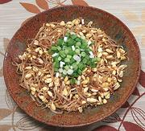

|
California Soy Sprout SaladCalifornia | ||||
| Makes: Effort: Sched: DoAhead: |
1-1/2 cups * 7 min Yes |
A lightly crunchy salad with robust flavors. Korean ingredients, but a California recipe - see Back Story | |||
|
12 ----- 1/2 2 2 1/2 2/3 ----- |
oz --- t T T T t --- |
Soy Sprouts (1) -- Dressing Salt Rice Vinegar Soy Sauce Sesame Oil, dark Chili Flake (2) ------------ |
Make - (7 min)
|